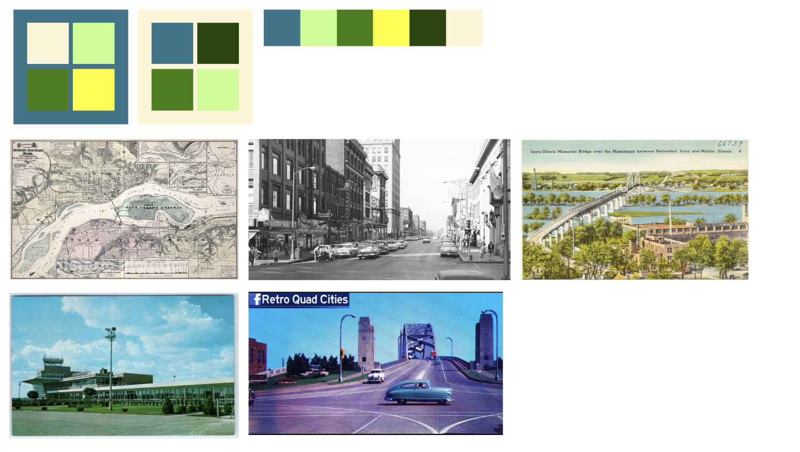
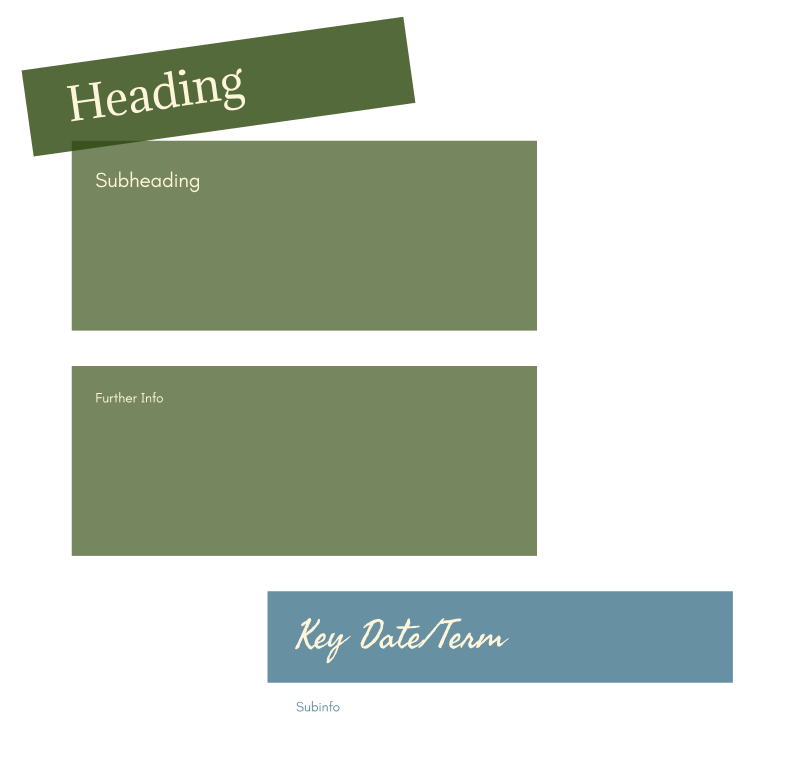

Project Background (Spring 2025)
- A site mockup displaying the history of where I am from
- A complex historical study of the Quad Cities from the 19th century through modern day
- Required effective design choices to succinctly and accessibly convey complex information
My Process
- Research Stage: Collected inspiration and information
- Draft Stage: Brainstormed ideas on how to convey complex information in a visually appealing way
- Design Stage: Created wireframe in Figma and prototype in Webflow
PART 1:
RESEARCH
- Collected visual inspiration for both design and research from various sources
- Outcomes
- A strong understanding of the Quad Cities' history, and a general design goal

Initial Color Palettes and Research Images
PART 2:
INITIAL DRAFT
- Brainstormed information architecture and planned image layout
- Outcomes
- A layout to base my mockup on

Initial Information Architecture
PART 3:
FINAL DRAFT
- Integrating My Research
- Outcomes
Final Color Palette and Typography Hierarchy